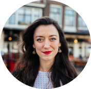
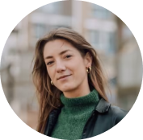
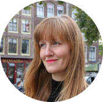

Local Color
Local Color is een tweejarig project dat onderzoekt hoe biologische kleurstoffen (‘biochemos’) voor textiel lokaal en kleinschalig kunnen worden geproduceerd en stedelijker verftuinen. Deze verftuinen verbinden stedelijk groen met de productie van natuurlijke textielverf en stimuleren lokale samenwerking.
Projectduur
15 mei 2023 – 15 mei 2025
Links
Visie
Local Color brengt natuurlijke kleurtechnieken tot leven door verftuinen te kweken in stads- en gemeenschaps-tuinen in Amsterdam. Het project bevordert duurzame productie, herstelt traditionele kleurmethoden en experimenteert met nieuwe mogelijkheden.
Daarnaast creëert Local Color bewustzijn over natuurlijke systemen en nodigt bewoners uit actief deel te nemen aan gemeenschapstuinen. Het doel is een circulaire relatie te realiseren die binnen planetaire grenzen functioneert.
Partners en aanpak
Local Color wordt uitgevoerd door Waag’s TextileLab Amsterdam, in samenwerking met de Biomaterials Studio (AMS Institute) en medeoprichter New Optimist. Het project biedt lokale gemeenschappen samen, zoals kwekers, tuiniers, textile ontwerpers, en een circulaire waardeketen om textielkleurstoffen te ontwikkelen. Via onderzoek, publicaties en een gezamenlijk werkend kennisgebied wil Local Color bijdragen aan de overgang naar een duurzame verandering in de textielsector.
Team
-

Cecilia Raspanti
-

Isabel Benetzen
-

Ista Bosshard
-

Maarten Smith